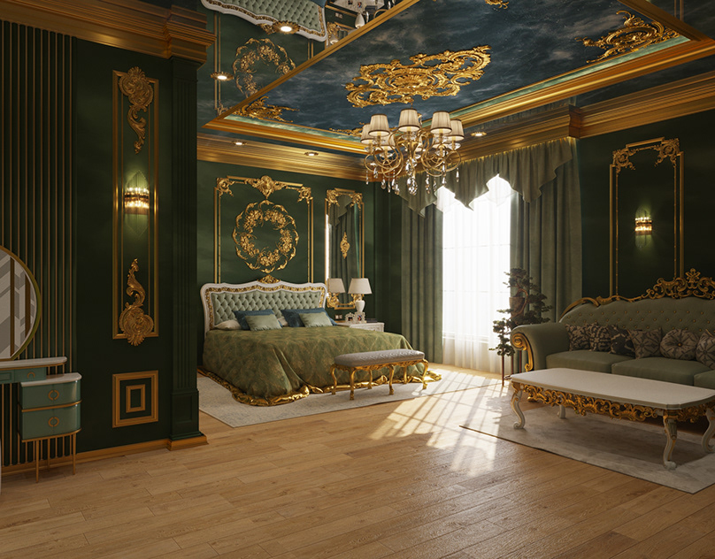

Interyer dizayn — bu ichki makonlarni estetik va funksional jihatdan
loyihalash jarayoni. U nafaqat mebel va dekoratsiyani tanlashni, balki
ranglar, materiallar, yorug'lik va makonning umumiy atmosferasini
yaratishni ham o'z ichiga oladi. Interyer dizaynning asosiy jihatlari
quyidagilar: 1. **Funktsionallik**: Har bir makonning maqsadini aniqlash
va unga mos ravishda dizayn qilish. Masalan, yashash xonasi, oshxona
yoki ish joyi uchun alohida yondashuvlar talab etiladi. 2. **Estetika**:
Ranglar, materiallar va uslublarni tanlash orqali makonning ko'rinishini
yaxshilash. Bu yerda uslublar (klassik, zamonaviy, skandinav, industrial
va boshqalar) muhim rol o'ynaydi. 3. **Yorug'lik**: Yorug'lik
manbalarini to'g'ri joylashtirish va tabiiy yorug'likdan foydalanish
interyerning umumiy ko'rinishini va qulayligini ta'minlaydi. 4.
**Materiallar**: Mebel, devor qoplamalari, pol va aksessuarlar uchun
materiallarni tanlash. Har bir materialning o'ziga xos xususiyatlari va
ko'rinishi bor. 5. **Proportsiya va balans**: Mebel va boshqa elementlar
o'rtasidagi muvozanatni saqlash. Bu makonning vizual jihatdan jozibador
bo'lishini ta'minlaydi. 6. **Shaxsiylashtirish**: Klientning shaxsiy
uslubini va ehtiyojlarini inobatga olish, shunda interyer uning
xarakterini aks ettirishi mumkin. Interyer dizayn jarayoni odatda
quyidagi bosqichlarni o'z ichiga oladi: 1. **Tadqiqot**: Klient bilan
suhbat va ehtiyojlarni aniqlash. 2. **Konsepsiya ishlab chiqish**:
Dastlabki g'oyalar va mood board (atmosfera taxtasi) yaratish. 3.
**Rejalashtirish**: Joylashuv rejasini va dizayn chizmalarini
tayyorlash. 4. **Tajriba**: Materiallar va ranglar bilan eksperiment
qilish. 5. **Amalga oshirish**: Dizaynni amalga oshirish va nazorat
qilish. Interyer dizayn - bu ijodkorlik va muhandislikni birlashtiruvchi
soha bo'lib, u insonlarning hayot sifatini yaxshilashga yordam beradi.